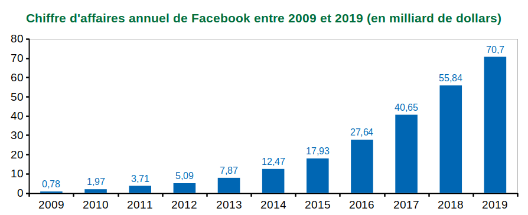

Le modèle économique des réseaux sociaux
Introduction
Tous les réseaux sociaux ont des coûts :
-
l'hébergement web,
-
les charges,
-
les employés à rémunérer.
Il faut donc que les réseau sociaux aient des sources de revenus pour couvrir tous ses coûts
et produire des bénéfices.
Les sources de revenus des réseaux sociaux
Le service fourni par les réseaux sociaux nécessite de l’argent.
Les sources financières pour créer et faire vivre un réseau social sont diverses :
-
fournir un service gratuit jusqu’à un certain niveau, puis être payant (exemple : LinkedIn) ;
-
avoir des revenus issus de la publicité (exemple : Facebook, Instagram) ;
-
vendre l’accès aux données des utilisateurs (un célèbre slogan dit :
« Si c’est gratuit, c’est que vous êtes le produit ») permettant ainsi à
l’annonceur de promouvoir ses services de façon extrêmement ciblée ;
-
les abonnements ;
-
La vente de produits dérivés ou complémentaires.
La plupart des réseaux sociaux sont gratuits, cela signifie donc que la publicité ou
bien les données personnelles sont l’objet d’échange.
Chiffre d'affaire
Les réseaux sociaux génèrent des chiffres d'affaires importants qui propgressent chaque année, comme le montre le graphique ci-dessous pour l'évolution du chiffre d'affaires annuel de Facebook.
On rappelle que le chiffre d'affaires d'une entreprise est l'ensemble de toutes ces recettes,
à ne pas confondre avec le bénéfice qui correspond au chiffre d'affaires moins les dépenses.

Exercice 5.1